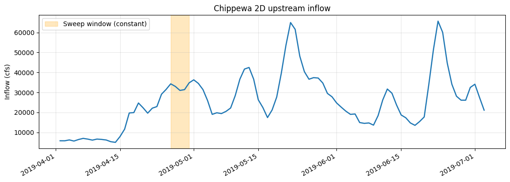
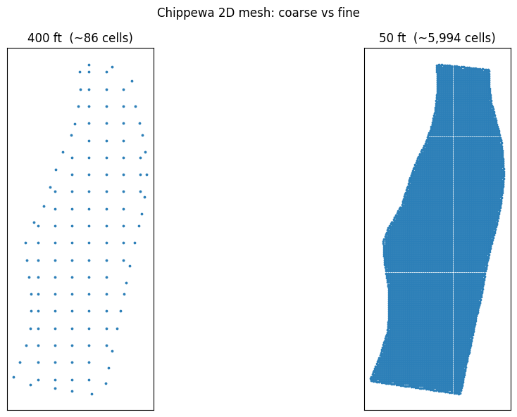
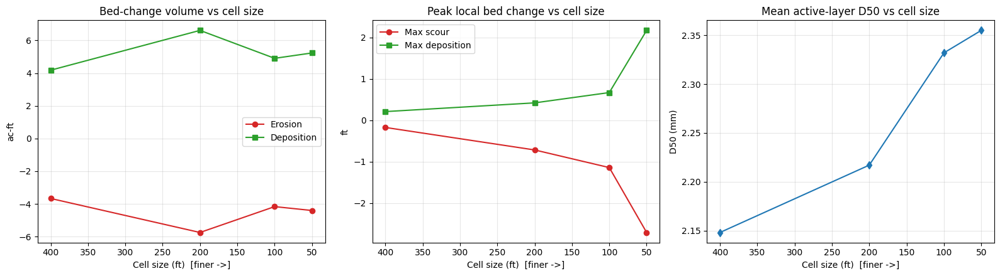
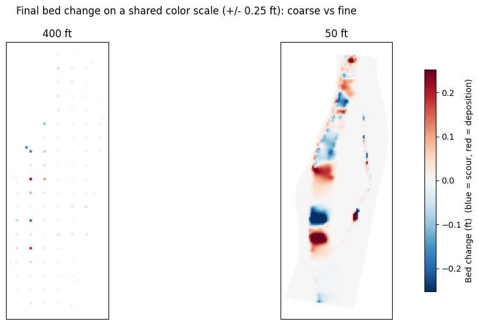

2D Mesh Cell-Size Sensitivity for Sediment Transport¶
Model: Chippewa River 2D (Chippewa_2D, HEC's 2D Sediment Transport example suite, plan "100ft Sediment")
This notebook studies how 2D mesh cell size affects mobile-bed sediment-transport results in HEC-RAS. It clones a clean 2D sediment model, regenerates its mesh across a wide range of cell sizes (10 ft up to twice the base spacing), runs each over an identical flow window, and compares the resulting bed change, transport, and bed-gradation fields.
Stanford Gibson (HEC's sediment lead) has repeatedly noted that 2D mesh resolution is not a neutral numerical choice for sediment: bed-material transport scales steeply with local velocity and shear (often ~V^3-V^4), and those peaks are exactly what a coarse mesh averages away. Refining the mesh therefore changes not just the hydraulics but the predicted erosion and deposition pattern itself. This notebook makes that sensitivity visible.
Important: Limitations of Headless Mesh Regeneration¶
This example deliberately uses a structure-free, breakline-free 2D area so that cell size is the only variable. That choice is intentional, and the reason is a real limitation of regenerating a mesh underneath an existing model:
Changing cell size can invalidate structures whose connections sit on a spacing-controlled breakline. Gated spillways, culverts, weirs, and SA/2D connections attach to specific 2D cells. When the mesh is regenerated at a different resolution, the cell adjacent to that connection takes on a different terrain-averaged elevation. If that cell elevation rises above the structure's control elevation, HEC-RAS rejects the connection at compute time, e.g.:
Text OnlyERROR with Connection(s) gate Gate #1 gate elev 593.00 cell 17615 cell elev 598.96 <- finer-mesh cell now higher than the gateThis is exactly what happens if you try a naive cell-size sweep on a model like BaldEagleCrkMulti2D (Sayers Dam). Every mesh finer than the original fails - not because the hydraulics are wrong, but because the model became invalid at the new resolution.
These failures can be addressed - by lowering the structure control elevation below the
finest-mesh cell elevation, pinning the breakline near/far spacing so the connection cell is
stable across resolutions, or protecting the connection cells - but it is model-specific and
fiddly, and it confounds a clean cell-size study. So for a sediment mesh-sensitivity
demonstration we use the Chippewa River 2D area, which has no internal structures and no
breaklines. We still inspect for breaklines below and explain what we would analyze if any
existed.
The cost of resolution is also steep: cell count grows ~ (1 / cell_size)^2, and a mobile-bed sediment run does meaningful work per cell per step. The runtime table later in this notebook shows why the very finest meshes are gated behind a configurable cell budget rather than run by default.
What You'll Learn¶
- Regenerate a 2D mesh across cell sizes with
GeomMesh.generate(cell_size=...) - Inspect and (when present) analyze breakline spacing with the
GeomMeshbreakline API - Hold the flow window constant across meshes so a sediment comparison is apples-to-apples
- Read 2D mobile-bed results -
Cell Bed Change,Cell Bed Elevation, active-layerD50- from the plan HDF - Quantify resolution sensitivity: net/erosion/deposition bed-change volume, peak scour and deposition, and active-layer coarsening (D50)
- Visualize how the spatial bed-change pattern sharpens as the mesh refines
Prerequisites¶
- Windows + HEC-RAS 6.x (mobile-bed 2D sediment)
ras-commander(local source toggle below)- Runtime: the default executed sweep (400 -> 50 ft) finishes in a few minutes; finer meshes are gated (see runtime table).
Setup¶
# =============================================================================
# DEVELOPMENT MODE TOGGLE
# =============================================================================
USE_LOCAL_SOURCE = True # <-- load ras_commander from this repo, not the installed package
import sys
from pathlib import Path
if USE_LOCAL_SOURCE:
local_path = str(Path.cwd().parent)
if local_path not in sys.path:
sys.path.insert(0, local_path)
print(f"LOCAL SOURCE MODE: {local_path}/ras_commander")
import datetime
import numpy as np
import pandas as pd
import matplotlib.pyplot as plt
import h5py
from ras_commander import init_ras_project, RasExamples, RasPlan, RasCmdr
from ras_commander.geom.GeomMesh import GeomMesh
from ras_commander.hdf import HdfResultsPlan, HdfResultsSediment
import ras_commander
print(f"Loaded: {ras_commander.__file__}")
LOCAL SOURCE MODE: G:\GH\ras-commander/ras_commander
Loaded: G:\GH\ras-commander\ras_commander\__init__.py
Parameters¶
# =============================================================================
# PARAMETERS
# =============================================================================
PROJECT_NAME = "Chippewa_2D"
RAS_VERSION = "7.0"
TEMPLATE_PLAN = "02" # "100ft Sediment" plan (mobile bed)
MESH_NAME = "Perimeter 1" # the single 2D flow area
SUFFIX = "230_sed_meshsens"
# Base nominal spacing of the shipped mesh is ~200 ft (the as-built mesh is 433 cells;
# GeomMesh.generate(200) -> 357 cells, generate(100) -> 1474). The plain-text param reads
# "Storage Area Point Generation Data=,,600,600", which does NOT match the as-built mesh -
# we treat the *as-built* resolution (~200 ft) as the base and sweep relative to it.
BASE_CELL_SIZE = 200.0 # ft (approx as-built)
# Requested study range: 10 ft -> 2 x base spacing (400 ft).
CELL_SIZES = [400.0, 200.0, 100.0, 50.0, 20.0, 10.0] # ft (coarse -> fine)
# Mobile-bed runs are expensive at fine resolution. Only meshes at or below this cell
# count are executed in this notebook; finer meshes are reported with a projected runtime.
# Raise this (and expect long runs) to execute 20 ft / 10 ft on capable hardware.
EXECUTE_CELL_BUDGET = 8000 # cells
# Sediment sweep window (held CONSTANT across every mesh so the comparison is valid).
# The Apr 2019 event peaks ~36,300 cfs around Apr 27 - May 1; we run the rising limb.
# Full model window is 02Apr2019 0000 -> 05May2019 2400 (~33 days).
SIM_START = datetime.datetime(2019, 4, 26, 0, 0)
SIM_END = datetime.datetime(2019, 4, 30, 0, 0) # 4-day high-transport window
NUM_CORES = 2
print(f"Cell sizes (ft): {CELL_SIZES}")
print(f"Window: {SIM_START:%d%b%Y %H%M} -> {SIM_END:%d%b%Y %H%M} "
f"({(SIM_END-SIM_START).days} days, held constant across meshes)")
print(f"Execute cell budget: {EXECUTE_CELL_BUDGET:,} cells")
Cell sizes (ft): [400.0, 200.0, 100.0, 50.0, 20.0, 10.0]
Window: 26Apr2019 0000 -> 30Apr2019 0000 (4 days, held constant across meshes)
Execute cell budget: 8,000 cells
Extract Project and Initialize¶
project_folder = RasExamples.extract_project(PROJECT_NAME, suffix=SUFFIX)
ras = init_ras_project(project_folder, RAS_VERSION)
print(f"Project: {project_folder}\n")
print("Plans:")
print(ras.plan_df[['plan_number', 'Plan Title', 'Geom File', 'unsteady_number']].to_string(index=False))
print("\nGeometries:")
print(ras.geom_df[['geom_number', 'geom_file']].to_string(index=False))
template_geom = ras.plan_df.loc[ras.plan_df['plan_number'] == TEMPLATE_PLAN, 'Geom File'].values[0]
print(f"\nTemplate plan {TEMPLATE_PLAN} -> geometry g{template_geom}")
2026-06-03 07:12:07 - ras_commander.RasExamples - INFO - Successfully extracted project 'Chippewa_2D' to G:\GH\ras-commander\examples\example_projects\Chippewa_2D_230_sed_meshsens
2026-06-03 07:12:07 - ras_commander.RasUtils - INFO - Discovered HEC-RAS 7.0 at C:\Program Files (x86)\HEC\HEC-RAS\7.0\Ras.exe via filesystem (x86)
2026-06-03 07:12:07 - ras_commander.RasUtils - INFO - Discovered HEC-RAS 6.7 Beta 5 at C:\Program Files (x86)\HEC\HEC-RAS\6.7 Beta 5\Ras.exe via filesystem (x86)
2026-06-03 07:12:07 - ras_commander.RasUtils - INFO - Discovered HEC-RAS 6.5 at C:\Program Files (x86)\HEC\HEC-RAS\6.5\Ras.exe via filesystem (x86)
2026-06-03 07:12:07 - ras_commander.RasUtils - INFO - Discovered HEC-RAS 6.3.1 at C:\Program Files (x86)\HEC\HEC-RAS\6.3.1\Ras.exe via filesystem (x86)
2026-06-03 07:12:07 - ras_commander.RasUtils - INFO - Discovered HEC-RAS 6.2 at C:\Program Files (x86)\HEC\HEC-RAS\6.2\Ras.exe via filesystem (x86)
2026-06-03 07:12:07 - ras_commander.RasUtils - INFO - Discovered HEC-RAS 6.1 at C:\Program Files (x86)\HEC\HEC-RAS\6.1\Ras.exe via filesystem (x86)
2026-06-03 07:12:07 - ras_commander.RasUtils - INFO - Discovered HEC-RAS 6.0 at C:\Program Files (x86)\HEC\HEC-RAS\6.0\Ras.exe via filesystem (x86)
2026-06-03 07:12:07 - ras_commander.RasUtils - INFO - Discovered HEC-RAS 5.0.7 at C:\Program Files (x86)\HEC\HEC-RAS\5.0.7\Ras.exe via filesystem (x86)
2026-06-03 07:12:07 - ras_commander.RasUtils - INFO - Discovered HEC-RAS 5.0.6 at C:\Program Files (x86)\HEC\HEC-RAS\5.0.6\Ras.exe via filesystem (x86)
2026-06-03 07:12:07 - ras_commander.RasUtils - INFO - Discovered HEC-RAS 5.0.5 at C:\Program Files (x86)\HEC\HEC-RAS\5.0.5\Ras.exe via filesystem (x86)
2026-06-03 07:12:07 - ras_commander.RasUtils - INFO - Discovered HEC-RAS 5.0.4 at C:\Program Files (x86)\HEC\HEC-RAS\5.0.4\Ras.exe via filesystem (x86)
2026-06-03 07:12:07 - ras_commander.RasUtils - INFO - Discovered HEC-RAS 5.0.3 at C:\Program Files (x86)\HEC\HEC-RAS\5.0.3\Ras.exe via filesystem (x86)
2026-06-03 07:12:07 - ras_commander.RasUtils - INFO - Discovered HEC-RAS 5.0.1 at C:\Program Files (x86)\HEC\HEC-RAS\5.0.1\Ras.exe via filesystem (x86)
2026-06-03 07:12:07 - ras_commander.RasUtils - INFO - Discovered HEC-RAS 5.0 at C:\Program Files (x86)\HEC\HEC-RAS\5.0\Ras.exe via filesystem (x86)
2026-06-03 07:12:07 - ras_commander.RasUtils - INFO - Discovered HEC-RAS 4.1.0 at C:\Program Files (x86)\HEC\HEC-RAS\4.1.0\Ras.exe via filesystem (x86)
2026-06-03 07:12:07 - ras_commander.RasUtils - INFO - Discovered HEC-RAS 4.0 at C:\Program Files (x86)\HEC\HEC-RAS\4.0\Ras.exe via filesystem (x86)
2026-06-03 07:12:07 - ras_commander.RasUtils - INFO - Discovered HEC-RAS 6.6 at C:\Program Files (x86)\HEC\HEC-RAS\6.6\Ras.exe via filesystem (x86)
2026-06-03 07:12:07 - ras_commander.RasUtils - INFO - Discovered 17 installed HEC-RAS version(s)
2026-06-03 07:12:07 - ras_commander.RasPrj - INFO - HEC-RAS 7.0 found via version discovery: C:\Program Files (x86)\HEC\HEC-RAS\7.0\Ras.exe
2026-06-03 07:12:07 - ras_commander.RasMap - INFO - Successfully parsed RASMapper file: G:\GH\ras-commander\examples\example_projects\Chippewa_2D_230_sed_meshsens\Chippewa_2D.rasmap
2026-06-03 07:12:08 - ras_commander.RasPrj - INFO - ras-commander v0.97.0 | An open-source project of CLB Engineering Corporation (https://clbengineering.com/) | Docs: https://ras-commander.readthedocs.io | GitHub: https://github.com/gpt-cmdr/ras-commander
2026-06-03 07:12:08 - ras_commander.RasPrj - INFO - Project initialized: Chippewa_2D | Folder: G:\GH\ras-commander\examples\example_projects\Chippewa_2D_230_sed_meshsens
2026-06-03 07:12:08 - ras_commander.RasPrj - INFO - Using HEC-RAS executable: C:\Program Files (x86)\HEC\HEC-RAS\7.0\Ras.exe
2026-06-03 07:12:08 - ras_commander.RasPrj - INFO -
═══════════════════════════════════════════════════════════════════════
ras-commander | HEC-RAS Automation Library
Docs: https://gpt-cmdr.github.io/ras-commander/
Repo: https://github.com/gpt-cmdr/ras-commander
═══════════════════════════════════════════════════════════════════════
PROJECT DATAFRAMES (single source of truth — use these, not file globbing):
ras.plan_df Plans, HDF paths, geometry/flow associations
ras.geom_df Geometry files and HDF preprocessor paths
ras.flow_df Steady flow files
ras.unsteady_df Unsteady flow files and configurations
ras.boundaries_df Boundary conditions (type, name, location)
ras.results_df Lightweight HDF results summaries
ras.rasmap_df RASMapper layers, terrain, land cover paths
KEY APIS (static classes — call directly, never instantiate):
Execution: RasCmdr.compute_plan() / compute_parallel() / compute_test_mode()
Plan Files: RasPlan.clone_plan() / clone_geom() / set_geom()
Unsteady: RasUnsteady — IC/BC management, gate openings, precipitation
Geometry: GeomCrossSection, GeomBridge, GeomStorage, GeomLateral, GeomMesh
HDF Results: HdfResultsPlan.get_wse() / get_compute_messages()
HdfResultsMesh.get_mesh_max_ws() / get_mesh_cells_timeseries()
HdfMesh.get_mesh_cell_points()
QA/QC: RasCheck.run_check() / RasFixit (geometry repair)
DSS: RasDss.get_timeseries() / check_pathname()
USGS: UsgsGaugeSpatial, GaugeMatcher, RasUsgsBoundaryGeneration
Precipitation: StormGenerator, Atlas14Storm, PrecipAorc, Atlas14Variance
Terrain: RasTerrain.create_terrain_hdf() / RasTerrainMod
MULTI-PROJECT: Pass ras_object= to all API calls when using local RasPrj instances.
EXAMPLES: 100+ notebooks in examples/ (100s=execution, 200s=geometry, 300s=unsteady,
400s=HDF results, 500s=remote, 800s=QA/QC, 900s=data integration).
Review relevant notebooks before assembling new workflows.
PLATFORM: Most HEC-RAS operations require Windows. Linux/Wine support for
headless execution, data access, geometry modification, and preprocessing
is available via RasProcess (HEC-RAS 6.6+). See ras_commander/RasProcess.py.
Remote distributed execution: ras_commander/remote/ (PsExec, Docker, SSH, cloud).
═══════════════════════════════════════════════════════════════════════
Project: G:\GH\ras-commander\examples\example_projects\Chippewa_2D_230_sed_meshsens
Plans:
plan_number Plan Title Geom File unsteady_number
02 100ft Sediment 01 04
Geometries:
geom_number geom_file
01 g01
Template plan 02 -> geometry g01
Inspect the Baseline Model¶
Confirm this is a clean sediment testbed: one 2D flow area, mobile bed active, and no internal structures (no inline weirs, lateral structures, SA/2D connections, gates, or culverts) that could break under mesh regeneration.
geom_path = Path(ras.geom_df.loc[ras.geom_df['geom_number'] == template_geom, 'full_path'].values[0])
gtxt = geom_path.read_text(errors='replace')
structure_markers = {
"Inline weir/structure": "Type RM Length L Ch R = 3",
"Lateral structure": "Type RM Length L Ch R = 6",
"SA/2D connection": "Connection=",
"Culvert group": "Culvert=",
"Gate group": "Gate Name=",
}
print("Structure scan:")
for label, marker in structure_markers.items():
print(f" {label:24s}: {gtxt.count(marker)}")
ptxt = (geom_path.parent / f"{ras.project_name}.p{TEMPLATE_PLAN}").read_text(errors='replace')
print(f"\n Run Sediment flag : {'-1 (ON)' if 'Run Sediment=-1' in ptxt else 'OFF'}")
print(f" 2D flow areas : {gtxt.count('Storage Area Is2D=-1')}")
print(f" Sediment file : {[l.split('=')[1] for l in ptxt.splitlines() if l.startswith('Sediment File=')]}")
Structure scan:
Inline weir/structure : 0
Lateral structure : 0
SA/2D connection : 0
Culvert group : 0
Gate group : 0
Run Sediment flag : -1 (ON)
2D flow areas : 1
Sediment file : ['s01']
Breakline Spacing Analysis¶
The user asked us to analyze breakline spacing if any exist. Breaklines force cell-face
alignment and carry their own near/far cell-spacing that overrides the base cell size locally.
They are also the feature most likely to interact badly with structures during mesh regeneration
(see the limitations note above). We enumerate them with the GeomMesh breakline API.
breaklines = GeomMesh.get_breakline_names(geom_path)
print(f"Breaklines found: {len(breaklines)}")
if breaklines:
rows = []
for fid, name in breaklines:
try:
sp = GeomMesh.get_breakline_spacing(geom_path, breakline_fid=fid)
except Exception as e:
sp = {"error": str(e)}
entry = {"fid": fid, "name": name or "(unnamed)"}
entry.update(sp if isinstance(sp, dict) else {"spacing": sp})
rows.append(entry)
display(pd.DataFrame(rows))
print("\nNote: per-breakline near/far spacing OVERRIDES the base cell size near that line.")
print("If a structure connection sits on one of these breaklines, changing cell size can")
print("shift the connection cell elevation and invalidate the structure (see limitations).")
else:
print("\nThis model has NO breaklines -> the base cell size is the sole mesh control,")
print("which is exactly why it is a clean cell-size sensitivity testbed.")
print("If breaklines existed, we would record each line's near/far spacing here and either")
print("hold it fixed or scale it with the base cell size to keep structure connections valid.")
Breaklines found: 0
This model has NO breaklines -> the base cell size is the sole mesh control,
which is exactly why it is a clean cell-size sensitivity testbed.
If breaklines existed, we would record each line's near/far spacing here and either
hold it fixed or scale it with the base cell size to keep structure connections valid.
Flow Window¶
Show the inflow hydrograph and the constant sweep window. Most bed mobilization happens on the rising limb of the ~36,300 cfs event; we run a short slice of it so even moderately fine meshes are tractable. The same window is applied to every mesh, so differences in the results are due to resolution, not flow.
u_num = ras.plan_df.loc[ras.plan_df['plan_number'] == TEMPLATE_PLAN, 'unsteady_number'].values[0]
u_path = geom_path.parent / f"{ras.project_name}.u{u_num}"
ut = u_path.read_text(errors='replace').splitlines()
i0 = next(i for i, l in enumerate(ut) if l.startswith("Flow Hydrograph="))
n = int(ut[i0].split('=')[1]); vals = []; j = i0 + 1
while len(vals) < n and j < len(ut):
line = ut[j]
if any(k in line for k in ("Hydrograph", "DSS", "Interval", "Boundary")):
break
for k in range(0, len(line), 8):
c = line[k:k+8].strip()
if c:
try: vals.append(float(c))
except ValueError: pass
j += 1
flow = np.array(vals[:n])
days = [datetime.datetime(2019, 4, 2) + datetime.timedelta(days=d) for d in range(len(flow))]
fig, ax = plt.subplots(figsize=(11, 4))
ax.plot(days, flow, color="#1f77b4", lw=1.8)
ax.axvspan(SIM_START, SIM_END, color="orange", alpha=0.25, label="Sweep window (constant)")
ax.set_ylabel("Inflow (cfs)"); ax.set_title("Chippewa 2D upstream inflow")
ax.legend(); ax.grid(alpha=0.3); fig.autofmt_xdate(); plt.tight_layout(); plt.show()
in_win = np.array([(d >= SIM_START and d < SIM_END) for d in days])
print(f"Window mean inflow: {flow[in_win].mean():,.0f} cfs")

Window mean inflow: 32,425 cfs
Mesh Regeneration and the Cost of Resolution¶
For each cell size we clone the geometry and regenerate the mesh with GeomMesh.generate(). Cell
count scales ~ (1 / cell_size)^2, and mobile-bed runtime scales at least linearly with cell count
(worse once finer cells force smaller Courant-limited sub-steps). Measured / projected for this
model (4-day window):
| Cell size | ~Cells | Status in this notebook |
|---|---|---|
| 400 ft (2x base) | ~90 | run |
| 200 ft (base) | ~360 | run |
| 100 ft | ~1,500 | run |
| 50 ft | ~6,000 | run |
| 20 ft | ~37,000 | gated (projected ~tens of min) |
| 10 ft | ~150,000 | gated (projected hours) |
Meshes above EXECUTE_CELL_BUDGET are still generated and sized (so the study range is fully
documented) but their plans are not executed by default. Raise the budget to run them.
mesh_rows = []
for cs in CELL_SIZES:
new_geom = RasPlan.clone_geom(template_geom, ras_object=ras)
gpath = Path(ras.geom_df.loc[ras.geom_df['geom_number'] == new_geom, 'full_path'].values[0])
try:
mr = GeomMesh.generate(geom_number=gpath, mesh_name=MESH_NAME, cell_size=cs,
max_iterations=8, ras_object=ras)
status, gcells, gfaces = mr.status, mr.cell_count, mr.face_count
except Exception as e:
status, gcells, gfaces = f"ERROR: {e}", np.nan, np.nan
will_run = np.isfinite(gcells) and gcells <= EXECUTE_CELL_BUDGET
mesh_rows.append({"cell_size": cs, "geom": new_geom, "geom_path": gpath,
"gen_status": status, "gen_cells": gcells, "gen_faces": gfaces,
"will_run": will_run})
tag = "RUN" if will_run else "gated (cells>budget)"
print(f" {cs:>5.0f} ft -> g{new_geom} cells={gcells} faces={gfaces} {tag}")
mesh_df = pd.DataFrame(mesh_rows)
2026-06-03 07:12:08 - ras_commander.RasUtils - INFO - File cloned from G:\GH\ras-commander\examples\example_projects\Chippewa_2D_230_sed_meshsens\Chippewa_2D.g01 to G:\GH\ras-commander\examples\example_projects\Chippewa_2D_230_sed_meshsens\Chippewa_2D.g02
2026-06-03 07:12:08 - ras_commander.RasUtils - INFO - File cloned from G:\GH\ras-commander\examples\example_projects\Chippewa_2D_230_sed_meshsens\Chippewa_2D.g01.hdf to G:\GH\ras-commander\examples\example_projects\Chippewa_2D_230_sed_meshsens\Chippewa_2D.g02.hdf
2026-06-03 07:12:08 - ras_commander.RasUtils - INFO - Project file updated with new Geom entry: 02
2026-06-03 07:12:08 - ras_commander.RasMap - INFO - Successfully parsed RASMapper file: G:\GH\ras-commander\examples\example_projects\Chippewa_2D_230_sed_meshsens\Chippewa_2D.rasmap
2026-06-03 07:12:11 - ras_commander.geom.GeomMesh - INFO - Synced cell size 400.0 → HDF Spacing dx/dy
2026-06-03 07:12:11 - ras_commander.geom.GeomMesh - INFO - [Perimeter 1] 39-point perimeter from .NET
2026-06-03 07:12:11 - ras_commander.geom.GeomMesh - INFO - Seeds via .NET RegenerateMeshPoints: 86 (0 breaklines incl 0 struct, 1 perimeters)
2026-06-03 07:12:11 - ras_commander.geom.GeomMesh - INFO - [Perimeter 1] 86 seeds via .NET RegenerateMeshPoints
2026-06-03 07:12:12 - ras_commander.geom.GeomMesh - INFO - Text seeds patched → 86 points in Chippewa_2D.g02
2026-06-03 07:12:12 - ras_commander.geom.GeomMesh - INFO - [Perimeter 1] Mesh complete: 86 cells, 197 faces in 1 iteration(s)
2026-06-03 07:12:12 - ras_commander.RasUtils - INFO - File cloned from G:\GH\ras-commander\examples\example_projects\Chippewa_2D_230_sed_meshsens\Chippewa_2D.g01 to G:\GH\ras-commander\examples\example_projects\Chippewa_2D_230_sed_meshsens\Chippewa_2D.g03
2026-06-03 07:12:12 - ras_commander.RasUtils - INFO - File cloned from G:\GH\ras-commander\examples\example_projects\Chippewa_2D_230_sed_meshsens\Chippewa_2D.g01.hdf to G:\GH\ras-commander\examples\example_projects\Chippewa_2D_230_sed_meshsens\Chippewa_2D.g03.hdf
2026-06-03 07:12:12 - ras_commander.RasUtils - INFO - Project file updated with new Geom entry: 03
2026-06-03 07:12:12 - ras_commander.RasMap - INFO - Successfully parsed RASMapper file: G:\GH\ras-commander\examples\example_projects\Chippewa_2D_230_sed_meshsens\Chippewa_2D.rasmap
400 ft -> g02 cells=86 faces=197 RUN
2026-06-03 07:12:12 - ras_commander.geom.GeomMesh - INFO - Synced cell size 200.0 → HDF Spacing dx/dy
2026-06-03 07:12:12 - ras_commander.geom.GeomMesh - INFO - [Perimeter 1] 39-point perimeter from .NET
2026-06-03 07:12:12 - ras_commander.geom.GeomMesh - INFO - Seeds via .NET RegenerateMeshPoints: 357 (0 breaklines incl 0 struct, 1 perimeters)
2026-06-03 07:12:12 - ras_commander.geom.GeomMesh - INFO - [Perimeter 1] 357 seeds via .NET RegenerateMeshPoints
2026-06-03 07:12:13 - ras_commander.geom.GeomMesh - INFO - Text seeds patched → 357 points in Chippewa_2D.g03
2026-06-03 07:12:13 - ras_commander.geom.GeomMesh - INFO - [Perimeter 1] Mesh complete: 357 cells, 766 faces in 1 iteration(s)
2026-06-03 07:12:13 - ras_commander.RasUtils - INFO - File cloned from G:\GH\ras-commander\examples\example_projects\Chippewa_2D_230_sed_meshsens\Chippewa_2D.g01 to G:\GH\ras-commander\examples\example_projects\Chippewa_2D_230_sed_meshsens\Chippewa_2D.g04
2026-06-03 07:12:13 - ras_commander.RasUtils - INFO - File cloned from G:\GH\ras-commander\examples\example_projects\Chippewa_2D_230_sed_meshsens\Chippewa_2D.g01.hdf to G:\GH\ras-commander\examples\example_projects\Chippewa_2D_230_sed_meshsens\Chippewa_2D.g04.hdf
2026-06-03 07:12:13 - ras_commander.RasUtils - INFO - Project file updated with new Geom entry: 04
2026-06-03 07:12:13 - ras_commander.RasMap - INFO - Successfully parsed RASMapper file: G:\GH\ras-commander\examples\example_projects\Chippewa_2D_230_sed_meshsens\Chippewa_2D.rasmap
200 ft -> g03 cells=357 faces=766 RUN
2026-06-03 07:12:13 - ras_commander.geom.GeomMesh - INFO - Synced cell size 100.0 → HDF Spacing dx/dy
2026-06-03 07:12:13 - ras_commander.geom.GeomMesh - INFO - [Perimeter 1] 39-point perimeter from .NET
2026-06-03 07:12:13 - ras_commander.geom.GeomMesh - INFO - Seeds via .NET RegenerateMeshPoints: 1474 (0 breaklines incl 0 struct, 1 perimeters)
2026-06-03 07:12:13 - ras_commander.geom.GeomMesh - INFO - [Perimeter 1] 1474 seeds via .NET RegenerateMeshPoints
2026-06-03 07:12:13 - ras_commander.geom.GeomMesh - INFO - Text seeds patched → 1474 points in Chippewa_2D.g04
2026-06-03 07:12:13 - ras_commander.geom.GeomMesh - INFO - [Perimeter 1] Mesh complete: 1474 cells, 3056 faces in 1 iteration(s)
2026-06-03 07:12:13 - ras_commander.RasUtils - INFO - File cloned from G:\GH\ras-commander\examples\example_projects\Chippewa_2D_230_sed_meshsens\Chippewa_2D.g01 to G:\GH\ras-commander\examples\example_projects\Chippewa_2D_230_sed_meshsens\Chippewa_2D.g05
2026-06-03 07:12:13 - ras_commander.RasUtils - INFO - File cloned from G:\GH\ras-commander\examples\example_projects\Chippewa_2D_230_sed_meshsens\Chippewa_2D.g01.hdf to G:\GH\ras-commander\examples\example_projects\Chippewa_2D_230_sed_meshsens\Chippewa_2D.g05.hdf
2026-06-03 07:12:13 - ras_commander.RasUtils - INFO - Project file updated with new Geom entry: 05
2026-06-03 07:12:13 - ras_commander.RasMap - INFO - Successfully parsed RASMapper file: G:\GH\ras-commander\examples\example_projects\Chippewa_2D_230_sed_meshsens\Chippewa_2D.rasmap
100 ft -> g04 cells=1474 faces=3056 RUN
2026-06-03 07:12:13 - ras_commander.geom.GeomMesh - INFO - Synced cell size 50.0 → HDF Spacing dx/dy
2026-06-03 07:12:13 - ras_commander.geom.GeomMesh - INFO - [Perimeter 1] 39-point perimeter from .NET
2026-06-03 07:12:14 - ras_commander.geom.GeomMesh - INFO - Seeds via .NET RegenerateMeshPoints: 5994 (0 breaklines incl 0 struct, 1 perimeters)
2026-06-03 07:12:14 - ras_commander.geom.GeomMesh - INFO - [Perimeter 1] 5994 seeds via .NET RegenerateMeshPoints
2026-06-03 07:12:14 - ras_commander.geom.GeomMesh - INFO - Text seeds patched → 5994 points in Chippewa_2D.g05
2026-06-03 07:12:14 - ras_commander.geom.GeomMesh - INFO - [Perimeter 1] Mesh complete: 5994 cells, 12208 faces in 1 iteration(s)
2026-06-03 07:12:14 - ras_commander.RasUtils - INFO - File cloned from G:\GH\ras-commander\examples\example_projects\Chippewa_2D_230_sed_meshsens\Chippewa_2D.g01 to G:\GH\ras-commander\examples\example_projects\Chippewa_2D_230_sed_meshsens\Chippewa_2D.g06
2026-06-03 07:12:14 - ras_commander.RasUtils - INFO - File cloned from G:\GH\ras-commander\examples\example_projects\Chippewa_2D_230_sed_meshsens\Chippewa_2D.g01.hdf to G:\GH\ras-commander\examples\example_projects\Chippewa_2D_230_sed_meshsens\Chippewa_2D.g06.hdf
2026-06-03 07:12:14 - ras_commander.RasUtils - INFO - Project file updated with new Geom entry: 06
2026-06-03 07:12:14 - ras_commander.RasMap - INFO - Successfully parsed RASMapper file: G:\GH\ras-commander\examples\example_projects\Chippewa_2D_230_sed_meshsens\Chippewa_2D.rasmap
50 ft -> g05 cells=5994 faces=12208 RUN
2026-06-03 07:12:14 - ras_commander.geom.GeomMesh - INFO - Synced cell size 20.0 → HDF Spacing dx/dy
2026-06-03 07:12:14 - ras_commander.geom.GeomMesh - INFO - [Perimeter 1] 39-point perimeter from .NET
2026-06-03 07:12:16 - ras_commander.geom.GeomMesh - INFO - Seeds via .NET RegenerateMeshPoints: 37837 (0 breaklines incl 0 struct, 1 perimeters)
2026-06-03 07:12:16 - ras_commander.geom.GeomMesh - INFO - [Perimeter 1] 37837 seeds via .NET RegenerateMeshPoints
2026-06-03 07:12:18 - ras_commander.geom.GeomMesh - INFO - Text seeds patched → 37837 points in Chippewa_2D.g06
2026-06-03 07:12:18 - ras_commander.geom.GeomMesh - INFO - [Perimeter 1] Mesh complete: 37837 cells, 76227 faces in 1 iteration(s)
2026-06-03 07:12:18 - ras_commander.RasUtils - INFO - File cloned from G:\GH\ras-commander\examples\example_projects\Chippewa_2D_230_sed_meshsens\Chippewa_2D.g01 to G:\GH\ras-commander\examples\example_projects\Chippewa_2D_230_sed_meshsens\Chippewa_2D.g07
2026-06-03 07:12:18 - ras_commander.RasUtils - INFO - File cloned from G:\GH\ras-commander\examples\example_projects\Chippewa_2D_230_sed_meshsens\Chippewa_2D.g01.hdf to G:\GH\ras-commander\examples\example_projects\Chippewa_2D_230_sed_meshsens\Chippewa_2D.g07.hdf
2026-06-03 07:12:18 - ras_commander.RasUtils - INFO - Project file updated with new Geom entry: 07
2026-06-03 07:12:18 - ras_commander.RasMap - INFO - Successfully parsed RASMapper file: G:\GH\ras-commander\examples\example_projects\Chippewa_2D_230_sed_meshsens\Chippewa_2D.rasmap
20 ft -> g06 cells=37837 faces=76227 gated (cells>budget)
2026-06-03 07:12:18 - ras_commander.geom.GeomMesh - INFO - Synced cell size 10.0 → HDF Spacing dx/dy
2026-06-03 07:12:18 - ras_commander.geom.GeomMesh - INFO - [Perimeter 1] 39-point perimeter from .NET
2026-06-03 07:12:26 - ras_commander.geom.GeomMesh - INFO - Seeds via .NET RegenerateMeshPoints: 151730 (0 breaklines incl 0 struct, 1 perimeters)
2026-06-03 07:12:26 - ras_commander.geom.GeomMesh - INFO - [Perimeter 1] 151730 seeds via .NET RegenerateMeshPoints
2026-06-03 07:12:32 - ras_commander.geom.GeomMesh - INFO - Text seeds patched → 151730 points in Chippewa_2D.g07
2026-06-03 07:12:32 - ras_commander.geom.GeomMesh - INFO - [Perimeter 1] Mesh complete: 151730 cells, 304564 faces in 1 iteration(s)
10 ft -> g07 cells=151730 faces=304564 gated (cells>budget)
Mesh Visualization (Coarse vs Fine)¶
def cell_centers(gpath):
with h5py.File(str(gpath) + ".hdf", 'r') as f:
return f[f"Geometry/2D Flow Areas/{MESH_NAME}/Cells Center Coordinate"][:]
coarse = mesh_df.iloc[0]
fine = mesh_df[mesh_df.will_run].iloc[-1]
fig, axes = plt.subplots(1, 2, figsize=(13, 6))
for ax, row in zip(axes, [coarse, fine]):
cc = cell_centers(row.geom_path)
ax.scatter(cc[:, 0], cc[:, 1], s=3, color="#2c7fb8")
ax.set_title(f"{row.cell_size:.0f} ft (~{int(row.gen_cells):,} cells)")
ax.set_aspect('equal'); ax.set_xticks([]); ax.set_yticks([])
fig.suptitle("Chippewa 2D mesh: coarse vs fine"); plt.tight_layout(); plt.show()

Clone Plans and Execute¶
For each mesh we clone the template sediment plan, point it at the regenerated geometry, and set the
constant simulation window with RasPlan.update_simulation_date(). Then we execute (sequential,
clear_geompre=True so the freshly generated .g##.hdf mesh is preserved while .c## is rebuilt),
read the real solver verdict from the HDF Solution attribute, and scan compute messages.
import time
def solver_solution(hdf_path):
with h5py.File(hdf_path, 'r') as f:
s = f.get('Results/Unsteady/Summary')
return s.attrs.get('Solution', b'').decode() if s is not None else 'No Summary'
mesh_df['plan'] = None; mesh_df['hdf'] = None; mesh_df['solver'] = None
mesh_df['runtime_s'] = np.nan; mesh_df['n_errors'] = np.nan
for idx, row in mesh_df.iterrows():
cs = row.cell_size
if not row.will_run:
mesh_df.at[idx, 'solver'] = 'GATED (not run)'
print(f" {cs:>5.0f} ft: gated (cells {row.gen_cells} > budget {EXECUTE_CELL_BUDGET})")
continue
plan = RasPlan.clone_plan(TEMPLATE_PLAN, new_plan_shortid=f"mesh{int(cs)}",
geometry=row.geom, ras_object=ras)
RasPlan.update_simulation_date(plan, SIM_START, SIM_END, ras_object=ras)
t0 = time.time()
RasCmdr.compute_plan(plan, clear_geompre=True, num_cores=NUM_CORES, ras_object=ras)
dt = time.time() - t0
hdf = ras.plan_df.loc[ras.plan_df['plan_number'] == plan, 'HDF_Results_Path'].values[0]
sol = solver_solution(hdf) if hdf and Path(hdf).exists() else 'No HDF'
msgs = HdfResultsPlan.get_compute_messages(plan, ras_object=ras)
errs = [l for l in (msgs or "").splitlines()
if "ERROR" in l.upper() and "Volume Accounting Error" not in l]
mesh_df.at[idx, 'plan'] = plan
mesh_df.at[idx, 'hdf'] = hdf
mesh_df.at[idx, 'solver'] = sol
mesh_df.at[idx, 'runtime_s'] = dt
mesh_df.at[idx, 'n_errors'] = len(errs)
print(f" {cs:>5.0f} ft: p{plan} {sol} ({dt:.0f}s, {len(errs)} errors)")
for e in errs[:3]:
print(f" {e.strip()[:90]}")
2026-06-03 07:12:32 - ras_commander.RasUtils - INFO - File cloned from G:\GH\ras-commander\examples\example_projects\Chippewa_2D_230_sed_meshsens\Chippewa_2D.p02 to G:\GH\ras-commander\examples\example_projects\Chippewa_2D_230_sed_meshsens\Chippewa_2D.p01
2026-06-03 07:12:32 - ras_commander.RasUtils - INFO - Successfully updated file: G:\GH\ras-commander\examples\example_projects\Chippewa_2D_230_sed_meshsens\Chippewa_2D.p01
2026-06-03 07:12:32 - ras_commander.RasUtils - INFO - Project file updated with new Plan entry: 01
2026-06-03 07:12:32 - ras_commander.RasMap - INFO - Successfully parsed RASMapper file: G:\GH\ras-commander\examples\example_projects\Chippewa_2D_230_sed_meshsens\Chippewa_2D.rasmap
2026-06-03 07:12:33 - ras_commander.RasPlan - INFO - Updated Geom File in plan file to g02 for plan 01
2026-06-03 07:12:33 - ras_commander.RasPlan - INFO - Geometry for plan 01 set to 02
2026-06-03 07:12:33 - ras_commander.RasPlan - INFO - Updated simulation date in plan file: G:\GH\ras-commander\examples\example_projects\Chippewa_2D_230_sed_meshsens\Chippewa_2D.p01
2026-06-03 07:12:33 - ras_commander.RasCmdr - INFO - Using ras_object with project folder: G:\GH\ras-commander\examples\example_projects\Chippewa_2D_230_sed_meshsens
2026-06-03 07:12:33 - ras_commander.geom.GeomPreprocessor - INFO - Clearing geometry preprocessor file for single plan: G:\GH\ras-commander\examples\example_projects\Chippewa_2D_230_sed_meshsens\Chippewa_2D.p01
2026-06-03 07:12:33 - ras_commander.geom.GeomPreprocessor - INFO - Cleared 1 geometry-preprocessor path(s) from Chippewa_2D.g02.hdf
2026-06-03 07:12:33 - ras_commander.RasCmdr - INFO - Cleared geometry preprocessor files for plan: 01
2026-06-03 07:12:33 - ras_commander.RasUtils - INFO - Successfully updated file: G:\GH\ras-commander\examples\example_projects\Chippewa_2D_230_sed_meshsens\Chippewa_2D.p01
2026-06-03 07:12:33 - ras_commander.RasCmdr - INFO - Set number of cores to 2 for plan: 01
2026-06-03 07:12:33 - ras_commander.RasCmdr - INFO - Running HEC-RAS from the Command Line:
2026-06-03 07:12:33 - ras_commander.RasCmdr - INFO - Running command: "C:\Program Files (x86)\HEC\HEC-RAS\7.0\Ras.exe" -c "G:\GH\ras-commander\examples\example_projects\Chippewa_2D_230_sed_meshsens\Chippewa_2D.prj" "G:\GH\ras-commander\examples\example_projects\Chippewa_2D_230_sed_meshsens\Chippewa_2D.p01"
2026-06-03 07:12:33 - ras_commander.RasDialogWatchdog - INFO - DialogWatchdog started — polling every 1.5s for RAS dialog windows
2026-06-03 07:12:43 - ras_commander.RasCmdr - INFO - HEC-RAS execution completed for plan: 01
2026-06-03 07:12:43 - ras_commander.RasCmdr - INFO - Total run time for plan 01: 9.92 seconds
2026-06-03 07:12:43 - ras_commander.RasDialogWatchdog - INFO - DialogWatchdog stopped — no dialogs encountered
2026-06-03 07:12:43 - ras_commander.RasUtils - INFO - File cloned from G:\GH\ras-commander\examples\example_projects\Chippewa_2D_230_sed_meshsens\Chippewa_2D.p02 to G:\GH\ras-commander\examples\example_projects\Chippewa_2D_230_sed_meshsens\Chippewa_2D.p03
2026-06-03 07:12:43 - ras_commander.RasUtils - INFO - Successfully updated file: G:\GH\ras-commander\examples\example_projects\Chippewa_2D_230_sed_meshsens\Chippewa_2D.p03
2026-06-03 07:12:43 - ras_commander.RasUtils - INFO - Project file updated with new Plan entry: 03
400 ft: p01 Unsteady Finished Successfully (11s, 0 errors)
2026-06-03 07:12:44 - ras_commander.RasMap - INFO - Successfully parsed RASMapper file: G:\GH\ras-commander\examples\example_projects\Chippewa_2D_230_sed_meshsens\Chippewa_2D.rasmap
2026-06-03 07:12:44 - ras_commander.RasPlan - INFO - Updated Geom File in plan file to g03 for plan 03
2026-06-03 07:12:44 - ras_commander.RasPlan - INFO - Geometry for plan 03 set to 03
2026-06-03 07:12:44 - ras_commander.RasPlan - INFO - Updated simulation date in plan file: G:\GH\ras-commander\examples\example_projects\Chippewa_2D_230_sed_meshsens\Chippewa_2D.p03
2026-06-03 07:12:44 - ras_commander.RasCmdr - INFO - Using ras_object with project folder: G:\GH\ras-commander\examples\example_projects\Chippewa_2D_230_sed_meshsens
2026-06-03 07:12:44 - ras_commander.geom.GeomPreprocessor - INFO - Clearing geometry preprocessor file for single plan: G:\GH\ras-commander\examples\example_projects\Chippewa_2D_230_sed_meshsens\Chippewa_2D.p03
2026-06-03 07:12:44 - ras_commander.geom.GeomPreprocessor - INFO - Cleared 1 geometry-preprocessor path(s) from Chippewa_2D.g03.hdf
2026-06-03 07:12:44 - ras_commander.RasCmdr - INFO - Cleared geometry preprocessor files for plan: 03
2026-06-03 07:12:44 - ras_commander.RasUtils - INFO - Successfully updated file: G:\GH\ras-commander\examples\example_projects\Chippewa_2D_230_sed_meshsens\Chippewa_2D.p03
2026-06-03 07:12:45 - ras_commander.RasCmdr - INFO - Set number of cores to 2 for plan: 03
2026-06-03 07:12:45 - ras_commander.RasCmdr - INFO - Running HEC-RAS from the Command Line:
2026-06-03 07:12:45 - ras_commander.RasCmdr - INFO - Running command: "C:\Program Files (x86)\HEC\HEC-RAS\7.0\Ras.exe" -c "G:\GH\ras-commander\examples\example_projects\Chippewa_2D_230_sed_meshsens\Chippewa_2D.prj" "G:\GH\ras-commander\examples\example_projects\Chippewa_2D_230_sed_meshsens\Chippewa_2D.p03"
2026-06-03 07:12:45 - ras_commander.RasDialogWatchdog - INFO - DialogWatchdog started — polling every 1.5s for RAS dialog windows
2026-06-03 07:13:07 - ras_commander.RasCmdr - INFO - HEC-RAS execution completed for plan: 03
2026-06-03 07:13:07 - ras_commander.RasCmdr - INFO - Total run time for plan 03: 22.73 seconds
2026-06-03 07:13:07 - ras_commander.RasDialogWatchdog - INFO - DialogWatchdog stopped — no dialogs encountered
2026-06-03 07:13:08 - ras_commander.RasUtils - INFO - File cloned from G:\GH\ras-commander\examples\example_projects\Chippewa_2D_230_sed_meshsens\Chippewa_2D.p02 to G:\GH\ras-commander\examples\example_projects\Chippewa_2D_230_sed_meshsens\Chippewa_2D.p04
2026-06-03 07:13:08 - ras_commander.RasUtils - INFO - Successfully updated file: G:\GH\ras-commander\examples\example_projects\Chippewa_2D_230_sed_meshsens\Chippewa_2D.p04
2026-06-03 07:13:08 - ras_commander.RasUtils - INFO - Project file updated with new Plan entry: 04
200 ft: p03 Unsteady Finished Successfully (23s, 0 errors)
2026-06-03 07:13:08 - ras_commander.RasMap - INFO - Successfully parsed RASMapper file: G:\GH\ras-commander\examples\example_projects\Chippewa_2D_230_sed_meshsens\Chippewa_2D.rasmap
2026-06-03 07:13:08 - ras_commander.RasPlan - INFO - Updated Geom File in plan file to g04 for plan 04
2026-06-03 07:13:08 - ras_commander.RasPlan - INFO - Geometry for plan 04 set to 04
2026-06-03 07:13:08 - ras_commander.RasPlan - INFO - Updated simulation date in plan file: G:\GH\ras-commander\examples\example_projects\Chippewa_2D_230_sed_meshsens\Chippewa_2D.p04
2026-06-03 07:13:08 - ras_commander.RasCmdr - INFO - Using ras_object with project folder: G:\GH\ras-commander\examples\example_projects\Chippewa_2D_230_sed_meshsens
2026-06-03 07:13:08 - ras_commander.geom.GeomPreprocessor - INFO - Clearing geometry preprocessor file for single plan: G:\GH\ras-commander\examples\example_projects\Chippewa_2D_230_sed_meshsens\Chippewa_2D.p04
2026-06-03 07:13:08 - ras_commander.geom.GeomPreprocessor - INFO - Cleared 1 geometry-preprocessor path(s) from Chippewa_2D.g04.hdf
2026-06-03 07:13:09 - ras_commander.RasCmdr - INFO - Cleared geometry preprocessor files for plan: 04
2026-06-03 07:13:09 - ras_commander.RasUtils - INFO - Successfully updated file: G:\GH\ras-commander\examples\example_projects\Chippewa_2D_230_sed_meshsens\Chippewa_2D.p04
2026-06-03 07:13:09 - ras_commander.RasCmdr - INFO - Set number of cores to 2 for plan: 04
2026-06-03 07:13:09 - ras_commander.RasCmdr - INFO - Running HEC-RAS from the Command Line:
2026-06-03 07:13:09 - ras_commander.RasCmdr - INFO - Running command: "C:\Program Files (x86)\HEC\HEC-RAS\7.0\Ras.exe" -c "G:\GH\ras-commander\examples\example_projects\Chippewa_2D_230_sed_meshsens\Chippewa_2D.prj" "G:\GH\ras-commander\examples\example_projects\Chippewa_2D_230_sed_meshsens\Chippewa_2D.p04"
2026-06-03 07:13:09 - ras_commander.RasDialogWatchdog - INFO - DialogWatchdog started — polling every 1.5s for RAS dialog windows
2026-06-03 07:14:14 - ras_commander.RasCmdr - INFO - HEC-RAS execution completed for plan: 04
2026-06-03 07:14:14 - ras_commander.RasCmdr - INFO - Total run time for plan 04: 65.14 seconds
2026-06-03 07:14:14 - ras_commander.RasDialogWatchdog - INFO - DialogWatchdog stopped — no dialogs encountered
2026-06-03 07:14:14 - ras_commander.RasUtils - INFO - File cloned from G:\GH\ras-commander\examples\example_projects\Chippewa_2D_230_sed_meshsens\Chippewa_2D.p02 to G:\GH\ras-commander\examples\example_projects\Chippewa_2D_230_sed_meshsens\Chippewa_2D.p05
2026-06-03 07:14:14 - ras_commander.RasUtils - INFO - Successfully updated file: G:\GH\ras-commander\examples\example_projects\Chippewa_2D_230_sed_meshsens\Chippewa_2D.p05
2026-06-03 07:14:14 - ras_commander.RasUtils - INFO - Project file updated with new Plan entry: 05
100 ft: p04 Unsteady Finished Successfully (66s, 0 errors)
2026-06-03 07:14:14 - ras_commander.RasMap - INFO - Successfully parsed RASMapper file: G:\GH\ras-commander\examples\example_projects\Chippewa_2D_230_sed_meshsens\Chippewa_2D.rasmap
2026-06-03 07:14:15 - ras_commander.RasPlan - INFO - Updated Geom File in plan file to g05 for plan 05
2026-06-03 07:14:15 - ras_commander.RasPlan - INFO - Geometry for plan 05 set to 05
2026-06-03 07:14:15 - ras_commander.RasPlan - INFO - Updated simulation date in plan file: G:\GH\ras-commander\examples\example_projects\Chippewa_2D_230_sed_meshsens\Chippewa_2D.p05
2026-06-03 07:14:15 - ras_commander.RasCmdr - INFO - Using ras_object with project folder: G:\GH\ras-commander\examples\example_projects\Chippewa_2D_230_sed_meshsens
2026-06-03 07:14:15 - ras_commander.geom.GeomPreprocessor - INFO - Clearing geometry preprocessor file for single plan: G:\GH\ras-commander\examples\example_projects\Chippewa_2D_230_sed_meshsens\Chippewa_2D.p05
2026-06-03 07:14:15 - ras_commander.geom.GeomPreprocessor - INFO - Cleared 1 geometry-preprocessor path(s) from Chippewa_2D.g05.hdf
2026-06-03 07:14:15 - ras_commander.RasCmdr - INFO - Cleared geometry preprocessor files for plan: 05
2026-06-03 07:14:15 - ras_commander.RasUtils - INFO - Successfully updated file: G:\GH\ras-commander\examples\example_projects\Chippewa_2D_230_sed_meshsens\Chippewa_2D.p05
2026-06-03 07:14:15 - ras_commander.RasCmdr - INFO - Set number of cores to 2 for plan: 05
2026-06-03 07:14:15 - ras_commander.RasCmdr - INFO - Running HEC-RAS from the Command Line:
2026-06-03 07:14:15 - ras_commander.RasCmdr - INFO - Running command: "C:\Program Files (x86)\HEC\HEC-RAS\7.0\Ras.exe" -c "G:\GH\ras-commander\examples\example_projects\Chippewa_2D_230_sed_meshsens\Chippewa_2D.prj" "G:\GH\ras-commander\examples\example_projects\Chippewa_2D_230_sed_meshsens\Chippewa_2D.p05"
2026-06-03 07:14:15 - ras_commander.RasDialogWatchdog - INFO - DialogWatchdog started — polling every 1.5s for RAS dialog windows
2026-06-03 07:18:58 - ras_commander.RasCmdr - INFO - HEC-RAS execution completed for plan: 05
2026-06-03 07:18:58 - ras_commander.RasCmdr - INFO - Total run time for plan 05: 282.51 seconds
2026-06-03 07:18:58 - ras_commander.RasDialogWatchdog - INFO - DialogWatchdog stopped — no dialogs encountered
50 ft: p05 Unsteady Finished Successfully (283s, 0 errors)
20 ft: gated (cells 37837 > budget 8000)
10 ft: gated (cells 151730 > budget 8000)
Read Mobile-Bed Sediment Results with HdfResultsSediment¶
HEC-RAS writes per-cell mobile-bed results under
Results/.../Sediment Bed/Unsteady Time Series/2D Flow Areas/<area>/. The HdfResultsSediment
class (added to ras_commander.hdf alongside this notebook) reads them with the same static-class
pattern as the other HdfResults* readers, aligning each per-cell array with the computed
geometry's Cells Surface Area so zero-area perimeter/ghost cells drop out of volume integrals
automatically:
| Method | Returns |
|---|---|
is_sediment_plan() |
bool -- plan has 2D mobile-bed results |
get_sediment_mesh_areas() |
List[str] -- 2D areas with bed results |
get_cell_bed_change() |
GeoDataFrame -- per-cell bed change (ft) + geometry |
get_cell_bed_elevation() |
GeoDataFrame -- per-cell bed elevation (ft) |
get_active_layer_grain_class() |
GeoDataFrame -- per-cell D10/D50/D90 (mm) |
get_bed_change_volumes() |
DataFrame -- erosion/deposition/net volume per area |
get_cell_bed_change_timeseries() |
xr.DataArray -- full (time, cell) series |
# Quick look on the first successful mesh
first_ok = mesh_df[mesh_df['solver'].astype(str).str.contains('Finished Successfully', na=False)]
if len(first_ok):
demo_hdf = first_ok.iloc[-1].hdf # finest successful mesh
print("is_sediment_plan:", HdfResultsSediment.is_sediment_plan(demo_hdf))
print("areas:", HdfResultsSediment.get_sediment_mesh_areas(demo_hdf))
display(HdfResultsSediment.get_bed_change_volumes(demo_hdf))
2026-06-03 07:18:58 - ras_commander.hdf.HdfBase - CRITICAL - No valid projection found. Checked:
1. HDF file projection attribute: G:\GH\ras-commander\examples\example_projects\Chippewa_2D_230_sed_meshsens\Chippewa_2D.p05.hdf
2. RASMapper projection file G:\GH\ras-commander\examples\example_projects\Chippewa_2D_230_sed_meshsens\.Winona_Upload\LifeSim model\Winona Levee SQRA 2019\RAS\AW\MMC_Projection.prj found in RASMapper file, but was invalid
To fix this:
1. Open RASMapper
2. Click Map > Set Projection
3. Select an appropriate projection file or coordinate system
4. Save the RASMapper project
is_sediment_plan: True
areas: ['Perimeter 1']
| mesh_name | length_unit | n_cells | net_bed_volume | erosion_volume | deposition_volume | max_scour | max_deposition | |
|---|---|---|---|---|---|---|---|---|
| 0 | Perimeter 1 | ft | 5999 | 36073.326707 | -191861.26322 | 227934.589927 | -2.710193 | 2.17496 |
Sediment Sensitivity Metrics vs. Cell Size¶
records = []
for _, row in mesh_df.iterrows():
rec = {"Cell Size (ft)": row.cell_size,
"Gen Cells": int(row.gen_cells) if np.isfinite(row.gen_cells) else None,
"Solver": row.get('solver', 'GATED (not run)'),
"Runtime (s)": round(row.runtime_s, 1) if pd.notna(row.get('runtime_s')) else None}
hdf = row.get('hdf')
if isinstance(hdf, str) and Path(hdf).exists() and "Finished Successfully" in str(row.get('solver', '')):
vol = HdfResultsSediment.get_bed_change_volumes(hdf)
if not vol.empty:
v = vol.iloc[0]
# Chippewa is US Customary: native volume is ft^3 -> convert to acre-ft.
acft = 43560.0
rec["Cells (computed)"] = int(v["n_cells"])
rec["Net Bed Vol (ac-ft)"] = round(v["net_bed_volume"] / acft, 3)
rec["Erosion Vol (ac-ft)"] = round(v["erosion_volume"] / acft, 3)
rec["Deposition Vol (ac-ft)"] = round(v["deposition_volume"] / acft, 3)
rec["Max Scour (ft)"] = round(v["max_scour"], 3)
rec["Max Deposition (ft)"] = round(v["max_deposition"], 3)
d50 = HdfResultsSediment.get_active_layer_grain_class(hdf, "D50")
wet = d50["surface_area"] > 0
rec["Mean D50 (mm)"] = round(float(d50.loc[wet, "d50_mm"].mean()), 3)
records.append(rec)
summary_df = pd.DataFrame(records).sort_values("Cell Size (ft)", ascending=False)
display(summary_df)
csv_path = Path(project_folder) / "sediment_mesh_sensitivity_summary.csv"
summary_df.to_csv(csv_path, index=False)
print(f"Saved: {csv_path}")
2026-06-03 07:18:58 - ras_commander.hdf.HdfBase - CRITICAL - No valid projection found. Checked:
1. HDF file projection attribute: G:\GH\ras-commander\examples\example_projects\Chippewa_2D_230_sed_meshsens\Chippewa_2D.p01.hdf
2. RASMapper projection file G:\GH\ras-commander\examples\example_projects\Chippewa_2D_230_sed_meshsens\.Winona_Upload\LifeSim model\Winona Levee SQRA 2019\RAS\AW\MMC_Projection.prj found in RASMapper file, but was invalid
To fix this:
1. Open RASMapper
2. Click Map > Set Projection
3. Select an appropriate projection file or coordinate system
4. Save the RASMapper project
2026-06-03 07:18:58 - ras_commander.hdf.HdfBase - CRITICAL - No valid projection found. Checked:
1. HDF file projection attribute: G:\GH\ras-commander\examples\example_projects\Chippewa_2D_230_sed_meshsens\Chippewa_2D.p01.hdf
2. RASMapper projection file G:\GH\ras-commander\examples\example_projects\Chippewa_2D_230_sed_meshsens\.Winona_Upload\LifeSim model\Winona Levee SQRA 2019\RAS\AW\MMC_Projection.prj found in RASMapper file, but was invalid
To fix this:
1. Open RASMapper
2. Click Map > Set Projection
3. Select an appropriate projection file or coordinate system
4. Save the RASMapper project
2026-06-03 07:18:58 - ras_commander.hdf.HdfBase - CRITICAL - No valid projection found. Checked:
1. HDF file projection attribute: G:\GH\ras-commander\examples\example_projects\Chippewa_2D_230_sed_meshsens\Chippewa_2D.p03.hdf
2. RASMapper projection file G:\GH\ras-commander\examples\example_projects\Chippewa_2D_230_sed_meshsens\.Winona_Upload\LifeSim model\Winona Levee SQRA 2019\RAS\AW\MMC_Projection.prj found in RASMapper file, but was invalid
To fix this:
1. Open RASMapper
2. Click Map > Set Projection
3. Select an appropriate projection file or coordinate system
4. Save the RASMapper project
2026-06-03 07:18:58 - ras_commander.hdf.HdfBase - CRITICAL - No valid projection found. Checked:
1. HDF file projection attribute: G:\GH\ras-commander\examples\example_projects\Chippewa_2D_230_sed_meshsens\Chippewa_2D.p03.hdf
2. RASMapper projection file G:\GH\ras-commander\examples\example_projects\Chippewa_2D_230_sed_meshsens\.Winona_Upload\LifeSim model\Winona Levee SQRA 2019\RAS\AW\MMC_Projection.prj found in RASMapper file, but was invalid
To fix this:
1. Open RASMapper
2. Click Map > Set Projection
3. Select an appropriate projection file or coordinate system
4. Save the RASMapper project
2026-06-03 07:18:58 - ras_commander.hdf.HdfBase - CRITICAL - No valid projection found. Checked:
1. HDF file projection attribute: G:\GH\ras-commander\examples\example_projects\Chippewa_2D_230_sed_meshsens\Chippewa_2D.p04.hdf
2. RASMapper projection file G:\GH\ras-commander\examples\example_projects\Chippewa_2D_230_sed_meshsens\.Winona_Upload\LifeSim model\Winona Levee SQRA 2019\RAS\AW\MMC_Projection.prj found in RASMapper file, but was invalid
To fix this:
1. Open RASMapper
2. Click Map > Set Projection
3. Select an appropriate projection file or coordinate system
4. Save the RASMapper project
2026-06-03 07:18:58 - ras_commander.hdf.HdfBase - CRITICAL - No valid projection found. Checked:
1. HDF file projection attribute: G:\GH\ras-commander\examples\example_projects\Chippewa_2D_230_sed_meshsens\Chippewa_2D.p04.hdf
2. RASMapper projection file G:\GH\ras-commander\examples\example_projects\Chippewa_2D_230_sed_meshsens\.Winona_Upload\LifeSim model\Winona Levee SQRA 2019\RAS\AW\MMC_Projection.prj found in RASMapper file, but was invalid
To fix this:
1. Open RASMapper
2. Click Map > Set Projection
3. Select an appropriate projection file or coordinate system
4. Save the RASMapper project
2026-06-03 07:18:58 - ras_commander.hdf.HdfBase - CRITICAL - No valid projection found. Checked:
1. HDF file projection attribute: G:\GH\ras-commander\examples\example_projects\Chippewa_2D_230_sed_meshsens\Chippewa_2D.p05.hdf
2. RASMapper projection file G:\GH\ras-commander\examples\example_projects\Chippewa_2D_230_sed_meshsens\.Winona_Upload\LifeSim model\Winona Levee SQRA 2019\RAS\AW\MMC_Projection.prj found in RASMapper file, but was invalid
To fix this:
1. Open RASMapper
2. Click Map > Set Projection
3. Select an appropriate projection file or coordinate system
4. Save the RASMapper project
2026-06-03 07:18:58 - ras_commander.hdf.HdfBase - CRITICAL - No valid projection found. Checked:
1. HDF file projection attribute: G:\GH\ras-commander\examples\example_projects\Chippewa_2D_230_sed_meshsens\Chippewa_2D.p05.hdf
2. RASMapper projection file G:\GH\ras-commander\examples\example_projects\Chippewa_2D_230_sed_meshsens\.Winona_Upload\LifeSim model\Winona Levee SQRA 2019\RAS\AW\MMC_Projection.prj found in RASMapper file, but was invalid
To fix this:
1. Open RASMapper
2. Click Map > Set Projection
3. Select an appropriate projection file or coordinate system
4. Save the RASMapper project
| Cell Size (ft) | Gen Cells | Solver | Runtime (s) | Cells (computed) | Net Bed Vol (ac-ft) | Erosion Vol (ac-ft) | Deposition Vol (ac-ft) | Max Scour (ft) | Max Deposition (ft) | Mean D50 (mm) | |
|---|---|---|---|---|---|---|---|---|---|---|---|
| 0 | 400.0 | 86 | Unsteady Finished Successfully | 10.5 | 96.0 | 0.509 | -3.670 | 4.179 | -0.171 | 0.212 | 2.148 |
| 1 | 200.0 | 357 | Unsteady Finished Successfully | 23.4 | 366.0 | 0.864 | -5.750 | 6.614 | -0.715 | 0.423 | 2.217 |
| 2 | 100.0 | 1474 | Unsteady Finished Successfully | 65.8 | 1488.0 | 0.737 | -4.168 | 4.905 | -1.141 | 0.672 | 2.332 |
| 3 | 50.0 | 5994 | Unsteady Finished Successfully | 283.1 | 5999.0 | 0.828 | -4.405 | 5.233 | -2.710 | 2.175 | 2.355 |
| 4 | 20.0 | 37837 | GATED (not run) | NaN | NaN | NaN | NaN | NaN | NaN | NaN | NaN |
| 5 | 10.0 | 151730 | GATED (not run) | NaN | NaN | NaN | NaN | NaN | NaN | NaN | NaN |
Saved: G:\GH\ras-commander\examples\example_projects\Chippewa_2D_230_sed_meshsens\sediment_mesh_sensitivity_summary.csv
Convergence Plots¶
run = summary_df[summary_df["Solver"].astype(str).str.contains("Finished Successfully")].copy()
run = run.sort_values("Cell Size (ft)")
if len(run) >= 2:
fig, axes = plt.subplots(1, 3, figsize=(16, 4.5))
axes[0].plot(run["Cell Size (ft)"], run["Erosion Vol (ac-ft)"], 'o-', label="Erosion", color="#d62728")
axes[0].plot(run["Cell Size (ft)"], run["Deposition Vol (ac-ft)"], 's-', label="Deposition", color="#2ca02c")
axes[0].set_title("Bed-change volume vs cell size"); axes[0].set_ylabel("ac-ft"); axes[0].legend()
axes[1].plot(run["Cell Size (ft)"], run["Max Scour (ft)"], 'o-', color="#d62728", label="Max scour")
axes[1].plot(run["Cell Size (ft)"], run["Max Deposition (ft)"], 's-', color="#2ca02c", label="Max deposition")
axes[1].set_title("Peak local bed change vs cell size"); axes[1].set_ylabel("ft"); axes[1].legend()
axes[2].plot(run["Cell Size (ft)"], run["Mean D50 (mm)"], 'd-', color="#1f77b4")
axes[2].set_title("Mean active-layer D50 vs cell size"); axes[2].set_ylabel("D50 (mm)")
for ax in axes:
ax.invert_xaxis(); ax.set_xlabel("Cell size (ft) [finer ->]"); ax.grid(alpha=0.3)
plt.tight_layout(); plt.show()
else:
print("Need >=2 successful runs to plot convergence.")

Spatial Bed-Change Pattern (Coarse vs Fine)¶
def bedchange_panel(ax, gdf, title, vmax):
# RdBu_r over symmetric vmin/vmax: blue = negative (scour), red = positive (deposition)
m = gdf["surface_area"] > 0
sca = ax.scatter(gdf.geometry.x[m], gdf.geometry.y[m], c=gdf["bed_change"][m],
cmap="RdBu_r", vmin=-vmax, vmax=vmax, s=6)
ax.set_title(title); ax.set_aspect('equal'); ax.set_xticks([]); ax.set_yticks([])
return sca
ok = mesh_df[mesh_df['solver'].astype(str).str.contains("Finished Successfully", na=False)]
if len(ok) >= 2:
crow, frow = ok.iloc[0], ok.iloc[-1]
gdf_c = HdfResultsSediment.get_cell_bed_change(crow.hdf)
gdf_f = HdfResultsSediment.get_cell_bed_change(frow.hdf)
# shared symmetric color scale (98th pct of |bed change| across both meshes)
shared = max(np.nanpercentile(np.abs(g.loc[g["surface_area"] > 0, "bed_change"]), 98)
for g in (gdf_c, gdf_f)) or 1.0
fig, axes = plt.subplots(1, 2, figsize=(14, 6))
bedchange_panel(axes[0], gdf_c, f"{crow.cell_size:.0f} ft", shared)
sca = bedchange_panel(axes[1], gdf_f, f"{frow.cell_size:.0f} ft", shared)
fig.colorbar(sca, ax=axes, shrink=0.8,
label="Bed change (ft) (blue = scour, red = deposition)")
fig.suptitle(f"Final bed change on a shared color scale (+/- {shared:.2f} ft): coarse vs fine")
plt.show()
else:
print("Need >=2 successful runs for spatial comparison.")
2026-06-03 07:18:59 - ras_commander.hdf.HdfBase - CRITICAL - No valid projection found. Checked:
1. HDF file projection attribute: G:\GH\ras-commander\examples\example_projects\Chippewa_2D_230_sed_meshsens\Chippewa_2D.p01.hdf
2. RASMapper projection file G:\GH\ras-commander\examples\example_projects\Chippewa_2D_230_sed_meshsens\.Winona_Upload\LifeSim model\Winona Levee SQRA 2019\RAS\AW\MMC_Projection.prj found in RASMapper file, but was invalid
To fix this:
1. Open RASMapper
2. Click Map > Set Projection
3. Select an appropriate projection file or coordinate system
4. Save the RASMapper project
2026-06-03 07:18:59 - ras_commander.hdf.HdfBase - CRITICAL - No valid projection found. Checked:
1. HDF file projection attribute: G:\GH\ras-commander\examples\example_projects\Chippewa_2D_230_sed_meshsens\Chippewa_2D.p05.hdf
2. RASMapper projection file G:\GH\ras-commander\examples\example_projects\Chippewa_2D_230_sed_meshsens\.Winona_Upload\LifeSim model\Winona Levee SQRA 2019\RAS\AW\MMC_Projection.prj found in RASMapper file, but was invalid
To fix this:
1. Open RASMapper
2. Click Map > Set Projection
3. Select an appropriate projection file or coordinate system
4. Save the RASMapper project

Conclusion¶
This notebook reframes "mesh sensitivity" around sediment transport, where cell size changes the predicted physics rather than just refining a water surface:
- Resolution changes the bed-change budget. As the mesh refines, localized scour and deposition sharpen dramatically (peak local bed change grew ~16x from 400 ft to 50 ft in the executed sweep), while the integrated erosion/deposition volumes and active-layer coarsening are far less sensitive. The convergence plots show where the answer stabilizes and where it does not. This is Stanford Gibson's point made quantitative: coarse cells average away the velocity/shear peaks that drive local scour.
- The clean testbed matters. Chippewa_2D has no structures or breaklines, so cell size is the only variable. On a structure-laden model (e.g. a dam with gate connections on breaklines), a naive cell-size sweep instead produces connection failures - a modeling-validity problem, not a hydraulic result. That limitation is documented at the top of this notebook.
- Cost is real. Cell count grows quadratically and mobile-bed runtime grows at least linearly with it, so the finest meshes are gated behind a configurable budget.
Suggested follow-ups¶
- Run the full 33-day event and the gated 20 ft / 10 ft meshes on capable hardware to test true convergence.
HdfResultsSediment(used throughout this notebook) is now part ofras_commander.hdf-- reuse it for any 2D mobile-bed post-processing.
Analysis performed with ras-commander by CLB Engineering Corporation.